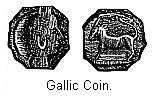

Bronze not the best metal—Difficulties attending the discovery of Iron—Probable steps in this discovery—Where this discovery was first made—Known in ancient Egypt—How this knowledge would spread—Iron would not drive out Bronze—The primitive Iron-worker—The advance in government—Pottery and ornaments of the Iron Age,—Weapons of early Iron Age—The battle-field at Tilfenan—Trade of early Iron Age—Invention of Money—Invention of Alphabetic Writing—Invasion of the Germanic Tribes—The cause of the Dark Ages—Connection of these three Ages—Necessity of believing in an extended past—Attempts to determine the same—Tinière Delta—Lake Bienne, British Fen-beds—Maximum and Minimum data—Argument from the widespread dispersion of the Turanian Race—Mr. Geikie's conclusions—The isolation of the Paleolithic Age.
INTRODUCTION of bronze was the harbinger of better days to the various tribes of Europe. Without metals it is doubtful if man would ever have been able to raise himself from barbarism. His advance in civilization has been in direct proportion to his ability to work metals. As long as he knew how to work bronze only he could not hope for the best results. The trouble was not in the metal itself, but in the supply; for copper and tin, the constituents of bronze, are found only in limited amounts. When we reflect on the multiplicity of purposes for which some metallic substance is needed, we at once perceive that men require a metal which can not only be worked cheaply, but must exist in great abundance, so that the needs of a rich and varied culture may be met.
The Divine Author of nature has stored away just such a metal, and in such exhaustless quantities that it forms an ingredient in nearly all soils, and flows away in the waters of many springs and rivers. It exists in abundance in nearly every country of the globe, in some forming veritable mountain masses. We refer to iron, the king of metals; and when man had learned to reduce it from its ores he had taken the first step in a new direction, the end whereof is yet far distant.
We have in the preceding chapter presented some reasons why copper would be known before iron. In the first place, how were men to learn there was such a thing as iron? Supposing its ores did occur in abundance, there was nothing to attract attention to them. They were not of great heft, like tin ore or of striking color, like the ores of copper. In the hills, and under the foot of man, nature indeed had imprisoned a genius; but there was no outward sign by which man was to divine his presence. Copper, as we have seen, occurs frequently in a native form that is ready for use, without reducing from its ores. Native iron, on the contrary, is almost the rarest of substances, though it is reported as occurring in one or two localities on the earth.1 Almost the only examples of native iron has been obtained from meteorites. Strange as it may seem, these wanderers in space, which occasionally flame athwart the sky, consist largely of pure iron; at least this is true of such specimens as have from time to time been found on the earth's surface. This supply is of course extremely limited, yet some Siberian tribes are said to make knives from iron obtained in this manner.2 Moreover the evidence of language, as used by the ancient Greeks and Egyptians, would imply the meteoric origin of the first known form of the metal.3 But though such accidental finds might prove the existence of another metal, they would furnish no hint how to extract it from its ores, or indeed, that it existed in the form of ores.
The prolonged schooling in metallurgy, which men received during the Bronze Age, could not fail to give them many hints, and doubtless accidental discoveries of metallic substances were made. We can conceive how, by accident or design, iron ore, treated in a similar manner to copper and tin ore, would leave behind a mass of spongy iron. The difficulty would be in working it; for, as we have seen, they were in the habit of casting their articles of bronze. But iron is very difficult of fusion. It was a long while before they learned how to do that. They had therefore to learn an entirely new art—that is, to fashion their implements of iron by hammering the heated mass.
There is no reason to suppose that iron was first discovered in Europe. Its spread has been from the east and south to the north and west. It, in all probability, was discovered, like bronze, in Asia. Although evidence, both archæological and traditional, goes to show that bronze was in use long before iron, yet iron has been known from time immemorial. Explain it how we will, civilization and history follow close after the knowledge of iron. Wherever the light of history first falls on the nations of the Old World, we find them acquainted with iron, but such knowledge, at least on the part of the Mediterranean nations, does not long precede history, for at that early time, iron was still a most precious metal. It was not yet produced in sufficient quantities to take the place of bronze; hence the prehistoric Iron Age was there but of short duration.
Among the early Egyptians iron was known, but was probably not very common. There is on this subject some diversity of opinion; some believing that at the very earliest historical period they were skilled in working it, and employed it in all the affairs of life, but others assure us that at the most ancient period they did not really use iron, and that bronze was the metal employed for all ordinary purposes.4
A wedge of iron is said to have been found in a joint between the stones of the great pyramid. Here, then, at the dawn of historic times iron seems to be making its way among a bronze-using people. The ancient Chaldeans employed iron as an ornament, but not for implements. With them it was therefore a precious metal. Among the Assyrians, iron was largely used, and at a comparatively early date. A careful study of the poems of Homer shows that the Greeks of nearly three thousand years ago had a knowledge of iron, though it was a highly prized metal. But to the north of the Mediterranean the prehistoric Iron Age was of longer duration.
We can readily see that a knowledge of iron would spread in much the same way as did bronze. When first introduced, it would be rare and costly, and so would be used sparingly. Bronze axes have been found with the edge of iron. Afterwards, as it became more abundant, it would be used altogether for cutting instruments and weapons, while bronze, being more easily worked, would still be used for ornaments, brooches, etc. At Hallstadt, in Austria, was discovered a cemetery which evidently belongs to a time when iron was taking the place of bronze. In this case, the implements of bronze are those forms which we have learned were produced near the close of the Bronze Age. The iron implements are not those forms best suited for that metal, but imitations of those of bronze.5 We remember when bronze was first introduced, the weapons were simply copies of those forms already made in stone.6
We may suppose that a knowledge of iron would spread rapidly. The knowledge of metallurgy necessary for the production of bronze was at this time widely disseminated. It would require, therefore, but a hint to start them in experiments. In the dissemination of this knowledge, commerce, of course, played a most important part. Whenever the early Greek and Roman writers have occasion to mention the arms of the less civilized tribes of Europe, we learn they were of iron. This shows that at a very early time this knowledge had spread all over Europe.7
It is scarcely necessary to remark that the use of iron would not drive out the use of bronze. That would still be used for many purposes; and even stone would continue in use, at least for some purposes. At the battle of Marathon, arrow-heads and lances of stone were largely used. We can easily understand how, by one of a number of causes, some rude tribes, yet unacquainted with the use of metal, would come to occupy the site of some settlement, the inhabitants of which had been in the Bronze or Iron Age. This actually happened at ancient Troy, where the remains of a stone-using folk have been found above those of a people using metal. This, though an exception to the general rule, need give us no surprise.
Iron manufacture at the present day, is one of our great industries. In its present form it is the final development of an industry whose first unfoldings we have now to glance at. That the first process man employed to procure iron should have been very rude, is what we would expect. Some of the partially civilized tribes of to-day may give us an insight into the process employed. We are told that in Tartary each native makes the iron he needs, just as every household would make its own bread. The furnace is a very small affair, not holding more than three pounds of ore. This is filled with ore and charcoal. The bellows are used, and after the charcoal is all burned out, the result is a small piece of spongy iron, which needs only repeated heating and hammering to be made serviceable.8 Primitive furnaces, on a somewhat larger scale, have been discovered in Switzerland. Here the excavation was made in the side of a hill, and a rude, dome-shaped chimney built over it.
We must not forget that our task ends where the historian's begins. The use of iron did not long precede history, so we have but little to describe as to the customs and manners of life during the prehistoric Iron Age. A general advance in all the social arts must surely have taken place. Improved tools, and more cheaply produced, could not fail to advance man very materially in culture. Some lake settlements were still in use as places of residence, but better means of protection than water was now known—walled cities were in use, especially around the Mediterranean sea.
Mr. Morgan has traced for us the evolution of government. At this early date the Greek and Roman people were engaged in substituting for ancient society the modern idea of government founded on territory.9 The great body of European tribes were now in the final stage of barbaric life. Their system of government was doubtless the highest known to ancient society— that of confederacies; the union of tribes speaking dialects of the same language, for offensive and defensive purposes.
As characteristic of the advance of this epoch, we may mention the appearance of pottery made on the potter's wheel, and baked in an improved kind of furnace. Previous to this epoch all the pottery had been moulded by hand and baked in an imperfect manner in the open air. This may be thought to be but a small improvement. Our civilization, however, depends upon small improvements. Only during the early part of this age, while iron was scarce, and therefore valuable, would it be used for the purpose of ornaments. Iron brooches have been found in considerable quantities in the lake settlements. Bronze would still be the principal article used for ornaments. The articles of bronze manufactured play a great deal of skill. Nor was gold entirely forgotten. The cap-shaped ornament of gold was found in Ireland. During the Bronze age, as we have seen, there was no attempt made to represent animal forms by way of ornaments; but we meet with such representations during the early part of the Iron Age. This shows how they ornamented the sheath of a sword found in one of the Swiss lakes.
The warriors of the early Iron Age possessed leaf-shaped swords for stabbing. The hilts were of bronze. This period was a struggle for existence, on the part of the various tribes of Europe. War must have been very common, so it is not strange that a large number of relics of this age are of warlike implements. Lance-heads, javelins, and arrow-heads have been found in abundance. It appears, from experiments ordered by the Emperor Napoleon III, that the javelins could only have been used as missile weapons, and that they were thrown, not by the hand merely grasping the shaft, but by means of a cord or thong, something after the principle of a sling.10
Some years ago an old battle-field was discovered at Tiefenau, in Switzerland. On it were found a great number of objects made of iron, such as fragments of chariots, bits for horses, wheels, pieces of coats of mail, and arms of various sorts, including no less than a hundred two-handed swords. All of these were made of iron.11 The soldiers also carried with them shields, made sometimes of bronze, as in the cut below, or of wood, studded with iron.
There is evidence of considerable volume of trade at this time. The Mediterranean was the theater of an extended commerce. Phœnician sailors not only ventured to brave the Mediterranean sea, but carried their vessels out on the Atlantic at as early a date as 500 B.C. The Greek traders were also active. Massilia, or as it is known in modern times, Marseilles, was the seat of a thriving trade. African ivory has been found in the tombs of Hallstadt, in Austria, in connection with ornaments of amber from the Baltic, and gold from Transylvania. The inhabitants of this town possessed in their salt mines the source of a lucrative trade. The trader of the Iron Age was able to take an immense stride by reason of the invention of money. Heretofore, in Europe, we have not met with coins, and trade must have been carried on by means of barter.
Acquainted as we are at the present day with money and the mechanism of exchange, it is difficult to see how any extended trade could be carried on without some unit of value, yet no coins are known earlier than the Iron Age.12 The most ancient coins known are Greek, and date back to the eighth century before Christ. This coin is one found in one of the lake settlements. It is made of bronze, and the figures are not stamped, but obtained by melting and casting.13 This, however, is not a Greek coin, but a Gallic one. On the battlefield of Tiefenau, mentioned above, several Greek coins, struck at Massilia, were found.14
It is scarcely necessary to point out, that though iron gives its name to this age, it by no means follows that the only difference between this and the Bronze Age is the use of iron. "The pottery is different, the forms of the implements and weapons are different, the ornamentation is different, the knowledge of metallurgy was more advanced, silver and lead were in use, letters had been invented, coins had been struck."15 That wonderful invention, the phonetic alphabet, was made during the early part of this age. The past was no longer simply kept alive in the memory of the living, handed down by tradition and song. Inscriptions, and monuments, and books abounded, and we are no longer confined to an inspection of their handiwork, or examination of their habitations, and explanation of ancient burial mounds for our knowledge of their life and surroundings. It is no longer the archæologists' collections, but the writings of the historian that unfolds past times and customs.
Let us cast a glance at the condition of Europe at the dawn of history. We have seen that in general terms the Bronze Age coincided with the arrival and spread of the Celts, though the earlier Celts were still Neolithic. The use of iron could scarcely have been inaugurated before the innumerable hordes of the Germanic tribes, probably driven from their Asiatic homes by the presence of invading people, were on the march. The world has, perhaps, never witnessed such a movement of people as convulsed Europe for several hundred years, beginning the second century before Christ and continuing until the fall of the Western Empire of Rome. The light of history dawns on a stormy scene in Europe. The Celts confined to the Western portion had been largely subjected by the Roman armies, but the largest portion of Europe held by the Germanic tribes was the seat from whence assault after assault was made on the Roman Empire, which at length, weakened by internal dissensions and enervated by luxury, split in twain, and the western, and most important part, fell before its barbarian foes.
The various tribes could not keep alive the civilization they had overthrown. The wandering hordes of Germanic people could not easily forget their former barbaric life, their marches of conquest, and careers of pillage. But the claims of civilization, though light and pleasant, are none the less imperative, and a people who seek her rewards must form settled communities, develop public spirit, organize government, and sink the individual in the public good. Not appreciating these claims, it is not strange that the incipient civilization nearly expired, and that the night of the Dark Ages enwrapt Europe. From out that darkness, composed of the descendants of the people whose culture we have been investigating, finally emerged the mediæval nations of Europe.
The review has been a pleasant one, for it is a record of progress. The difference between the culture of the Neolithic and the Iron Age is great, but it is simply a development, the result of a gradual growth. Civilization and history have only hastened this growth. If we look around us to-day we can trace the elements of our civilization back through the eras of history, and though the faint beginning of some can be noticed, yet many of them come down to us from prehistoric times. We have treated of these early people in the three stages of culture known as the Neolithic, Bronze, and Iron Ages. We have seen there is no hard and fast line dividing the different stages of culture. To borrow the words of another, these stages of progress, like the three principal colors of the rainbow, overlap, intermingle, and shade off the one into the other, and yet in the main they are well defined.16
We instinctively long to set bounds to the past, to measure it by the unit of years. It affords us satisfaction to give dates for events long since gone by. For any event in the domain of history, it is natural and appropriate to gratify this desire. It gives precision to our thoughts, and more firmly fixes the march of events. But the historical portion of human life on the globe is but a small part of the grand whole. When we pass beyond history, or into prehistoric times, we find ourselves utterly at a loss as to dates.
We have referred in the preceding pages to the commonly accepted belief of a few years ago, that, at most, a few thousand years express the whole period of human life on the globe. This was supposed to be the teaching of the Scriptures, but Infinite Wisdom left not only his word, but he left an imperishable record of the past in rocky strata and excavated valley, in dripping caves and mountain masses. When it was seen that the claims of geology for a greatly extended past, one transcending the powers of the human mind to conceive its length, could no longer be successfully denied, then it was that earnest investigators in the field of human antiquity could no longer shut their eyes to the fact that if geological evidence were worth any thing, man must have existed in the world for a far longer time than one covered by the brief period hitherto relied on.
This truth is so patent and plain that it has received the unqualified indorsement of the most learned scholars. Distinguished divines have been amongst its able expounders, and instead of being in opposition to the Bible, as already stated, the earnest reader finds in the periods of the geologists unexpected confirmation of its truths. The evidence of an extended past for man is not, however, wholly of a geological nature, though these have been the ones principally relied on. The archæologist to-day summons to his aid the science of language, studies into the origin of civilization and the comparison of the different races of men, and derives from each and all of these concurrent testimony as to a vast, shadowy, and profound antiquity for man, one stretching way beyond the dawn of history, far into the very night of time.
As we have now spent some time in tracing out the culture of these early ages, it may be well to see if there are any means at our command to determine the absolute chronology of the various ages. At the very outset of our inquiry, we shall perceive that we have no such class of facts as guided our investigations into the age of the Paleolithic remains. We have but to recall the situation in which the implements of that age were found, always under such circumstances, that we see at once that a great lapse of time has passed since they became imbedded where found, and then the bones of the various extinct animals, found so associated with the implements, that we are justified, even compelled, to admit they occupied the same section of country, and then, from a variety of causes, we are satisfied that they occupied Europe at the close of the Glacial Age, if not for long ages before. All this gave us a point of departure, and we have showed with what care scholars have studied all questions relating to the date of the Glacial Age.
But aside from the fact that geology points out that a long time went by after the close of the Glacial Age before Neolithic man arrived on the scene, we are largely deprived of its aid in our investigations; for all the various implements and specimens of the household industries, from which we derive our knowledge of these latter ages, are found only in surface deposits; that is, in the modern alluvia and silt of river bottoms, in superficial deposits, in caves, and in peat-bogs; and even in other instances where apparently deeply buried, as in the submerged forest deposits of the British coasts, we know that, geologically speaking, their age is recent.
But in spite of these difficulties, attempts have been made from time to time to determine the absolute chronology of these ages. The results, however, can only be considered as approximations of the truth. We will call attention to some of these calculations. Their value to us consists in showing us the methods by which this problem has been attacked, and not in the results obtained. M. Morlot, of Switzerland, has sought to determine this question by a study of the delta of the Tinière, which is a small river flowing into the lake of Geneva. Like all mountain streams, it brings down considerable quantities of sediment, with which it has formed a conical shaped delta. Cuttings for a railroad exposed a fine section of this cone, and showed that at three different times layers of vegetable soil, which must once have been its old surface were found.
The lowest surface was some twenty feet beneath the present surface, and here were found relics of the Stone Age. The second layer was at the depth of ten feet, and contained relics of the Bronze Age. Finally the first buried layer, three feet beneath the present surface, was found to contain relics of the Roman Age. Obtaining from other data the time that has elapsed since the deposits of the Roman layer, he readily calculates the age of the Stone and Bronze layers. By this means he obtains for the Bronze Age an antiquity of between three and four thousand years, and for the Neolithic Age from five to seven thousand years.17 M. Morlot does not claim for his calculation more than approximate accuracy.18 But if we were to allow it a greater accuracy than its author claims, it would still only show us that from a period of from five to seven thousand years ago, tribes of stone using folks lived in Switzerland. It tells us nothing as to their first appearance, or the total length of this age.19
Other calculations of a similar nature have been made. The Lake of Bienne, in Switzerland, has been gradually silting up along its margins from time immemorial. About seven hundred and fifty years ago there was an abbey built at one place on the then existing shore of the lake. Since that time the gain of land has been about twelve hundred feet. A considerable distance further up the valley are found the remains of a lake settlement of the Stone Age. If the gain of land has been uniform, it has not been far from seven thousand years since the lake washed round the ancient settlement. Of course the land may have gained faster at one time than at another, but from the general configuration of the valley it is considered that its gain was regular.20
Mr. Skertchly, of the Geological Survey of England, has furnished still another estimate, based on the growth of the Fen-beds on the east coast of England. It is sufficient to state that he also arrives at an estimate of about seven thousand years for the Neolithic period.21 Now these results are interesting, and their substantial agreement is, to say the least, striking. We must remember, however, that none of them are free from error. They may serve to clear up our thoughts on this subject, but we notice they tell us nothing as to the beginning of the Neolithic Age.
Abandoning the effort to obtain dates for the various ages, attempts have been made to calculate the entire interval that has elapsed since the close of the Glacial times, and thus set bounds to the first appearance of Neolithic man. We briefly touched on this question in determining the antiquity of the Paleolithic Age, and we say, as far as this country was concerned, it was comparatively a recent thing, but as for Europe, it must be at a very remote time. M. Quatrefages has called our attention to two investigations in Europe, which, in order to understand this question, we will now glance at. The waters of the Rhone carry into Lake Geneva every year quantities of sediment. In other words, from this and other sources, the lake is gradually being filled up. Carefully calculating the amount carried into the lake in a year, estimates have been made of the length of time it has taken the river to fill up the lake as much as it has.
But in making this calculation the date arrived at was a maximum one—that is, a point beyond which it is not reasonable to suppose the time extended. These calculations gave as a result one hundred thousand years. The meaning of this is that the time elapsed since the close of the Glacial Age was something less than the number just stated. On the other hand, a minimum date for this time has been obtained by estimating the amount of erosion in the valley of the River Saone, in France. From this we know that the time can not be less than seven thousand years.22
It is, perhaps, doubtful whether we shall ever be able to obtain satisfactory answers to these questions. From what we have repeatedly seen of the slowness of development of primitive man, we do not doubt but what the antiquity of Neolithic Man goes much farther back than seven thousand years. When a naturalist finds in widely separated parts of the world animals belonging to a common order, he is justified in concluding that the order is a very ancient one. To illustrate, the opossum belongs to an order of animals of which the only other representatives are found in Australia and the neighboring islands.23 We are not surprised, therefore, to learn that this order was the first to appear in geological time.24 We think the rule is equally applicable to races of men. We are told that the Turanian race, or, as it is often named, the Mongoloid race, is a very widely scattered one. Its representatives are found over the larger portion of Asia, in Northern Europe, the islands of the Pacific; and they were the only inhabitants of the New World at the time of the conquest.25 This wide dispersion would imply that they were one of the ancient races of the world, and as such their antiquity must be far greater than the above named number of years.
This point grows clearer when we see what light is afforded on this subject by historical research. The Turanian people were in full possession of Europe while yet the ancestors of the Hindoos and the various European nations dwelt together as one people in Asia. As a race they had grown old when the Celts commenced their wanderings. Egypt comes before us as a powerful people, at a time at least as early as six thousand years ago. Even at that time they had attained civilization. But we need not doubt that there is a long series of years lying back of that, during which this people were slowly advancing from a previous condition of barbarism. The Egyptian people themselves are, in part at least, descendants of a Turanian people that probably in former times occupied the valley of the Nile and North Africa.26
Mr. Geikie has lately gone over the entire ground from the point of view of a geologist. He ranges over a wide field, and appeals in support to writers of acknowledged ability in all branches of learning.27 Yet the impression we gather from his writings is that of ill-defined, but far-reaching antiquity, one necessary to account for the great climatic and geographical changes which he shows us have taken place since the Glacial Age. But he tells us that any term of years he could suggest would be a mere guess. We can not do better than leave the matter here. Perhaps as a result of the research of our present scholars, we may soon have more precise results.
These closing essays have impressed on us clearly and distinctly the isolation of the Paleolithic Age. When we reflect on its prolonged duration, its remoteness in time, and its complete severance from the Neolithic and succeeding ages, we are almost ready to wonder whether they were indeed human beings. But beginning with the Neolithic Age, we come to our own era. This primitive culture seems to have been the commencement of our own culture, and so the industries, household implements, and weapons of these ages possess a greater interest to us. We have now completed our inquiry into prehistoric life in Europe, and are ready to turn our attention to other parts of the field. What we have thus far learned shows us how true it is that the past of human life on the globe is full of mystery. We trust that what has been written will enable our readers to form clearer conceptions of life in Europe during these far away times.
Chapter VII: The Bronze Age in
Europe.
Chapter IX: Early Man in America.